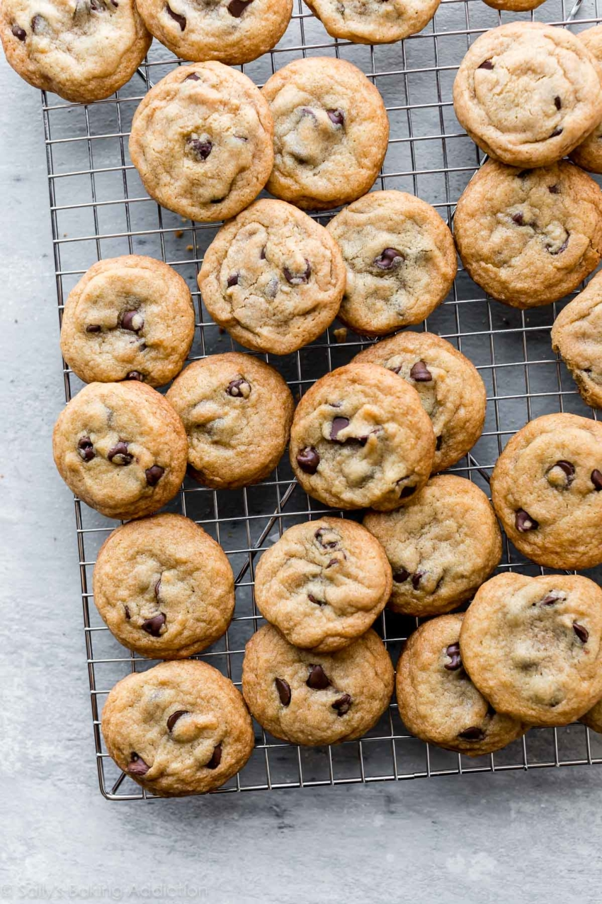

Crispy Chocolate Chip Cookies

Description
The most perfect, crispy, delicious cookies known to man.
I've made these several times for family and friends, and they
are always a hit. This recipe is based on Sally's Baking Addiction's
Crispy Chocolate Chip Cookie recipe. I've added my own twist occasionally
with gluten free flour, and chocolate m&ms. Delicious!
Ingredients
- 1 and 1/2 cups (188g) all-purpose flour
- 1/2 teaspoon of baking soda
- 1/2 teaspoon salt
- 10 Tablespoons (142g) unsalted butter, melted + slightly cooled
- 1/2 cup (100g) granulated sugar
- 1/4 cup (50g) packed light or dark brown sugar
- 2 Tablespoons (43g) honey or light corn syrup
- 1 large egg yolk
- 2 Tablespoons (30ml) milk
- 2 teaspoons pure vanilla extract
- 1 and 1/4 cups (225g) semi-sweet chocolate chips
Steps
- See step 4. If not chilling the cookie dough, preheat oven to 375 degrees F (191 degrees C) . Line baking sheets with parchment paper or silicone baking mats. Set aside.
- Whisk the flour, baking soda, and salt together in a large bowl. Set aside.
- Whisk the melted butter, granulated sugar, brown sugar, honey, egg yolk, milk, and vanilla extract together until combined. Pour into dry ingredients and mix everything together until completely combined. Fold in the chocolate chips. (You can use a mixer for this step if needed.) Dough will be soft.
- For thin and crisp cookies, do not chill the cookie dough and proceed with step 5. For slightly thicker and crisp cookies, cover and chill the cookie dough in the refrigerator for 1 hour then preheat the oven. For slightly thicker cookies with soft centers and crisp edges, cover and chill the cookie dough in the refrigerator for 2 hours then preheat the oven.
- Roll cookie dough into balls, 1 scant Tablespoon of dough per cookie, and arrange 2 inches apart on the baking sheets. Bake for 10-11 minutes or until browned on top and around the sides.
- Remove from the oven and allow cookies to cool on the baking sheet for 3 minutes before transferring to a wire rack to cool completely. Cookies crisp up as they cool.
Notes
- Make Ahead Instructions: Cookies stay fresh lightly covered at room temperature for up to 1 week. You can make the cookie dough and chill it in the refrigerator for up to 4 days. Allow to come to room temperature, preheat the oven, then continue with step 5. Keep in mind that cookies are the thinnest and crispiest when baked right away. Baked cookies freeze well for up to 3 months. Unbaked cookie dough balls freeze well for up to 3 months. Bake frozen cookie dough balls for an extra minute, no need to thaw.
- Recommended Gluten Free Flour: Namaste Gluten Free Flour